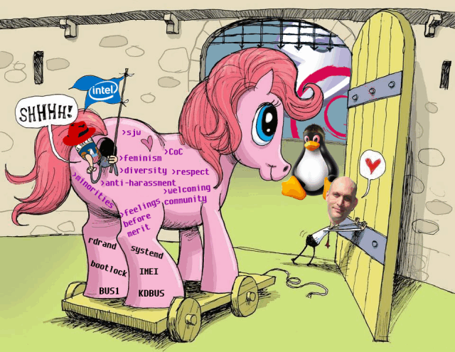

2018-09-23
Obrzydliwe kuriozum w świecie IT – usuwanie master/slave z Pythona, CoC w Linuxie. SJW.
Ostatnio obserwuję obrzydliwy proceder. Proceder upolityczniania świata IT i wytwarzania oprogramowania jako całości.
Co mam na myśli? Regularny proces niszczenia naszej społeczności polityczną poprawnością. Od dłuższego czasu obserwuję ten proces, ostatnio jednak gdy zobaczyłem, iż do oficjalnego repozytorium Pythona zmergowane zostały branche pull requestów, których jedynym zadaniem było… Zmienienie terminologii master/slave w kontekście procesów i tak dalej. Jakby tego było mało, to dość niedawno w grupie tworzącej jądro Linuxa pojawił się obowiązkowy CoC – Code of Conduct, który brzmi… Cóż, dość specyficznie. Sam Linus, który znany jest ze swojego ‘charakterystycznego’ zachowania, oraz tego, że każdemu potrafi powiedzieć co myśli, a często myśli dość ostro, ogłosił, że na razie robi sobie przerwę, by ‘popracować nad swoim charakterem w świetle pewnych zmian’. No ludzie kochani.
Te dwa wydarzenia sprawiły, że postanowiłem napisać swoje dwa słowa o tym temacie.
Otóż wielce mi się to nie podoba. Uważam za kompletnie obrzydliwe, wstrętne i nieakceptowalne, by robić z procesu wytwarzania IT oraz naszego społeczeństwa, jakąś politycznie poprawną abominację, która w niczym nie przypomina piękna swej oryginalnej formy.
Z czym konkretnie mam problem? Oto lista kilku rzeczy.
Zacznijmy może od omawianego przykładu zmiany terminologii Pythona. To nie jest odosobniony przypadek. Podobna sytuacja miała już miejsce kilka lat temu, tyle, że w kontekście kodu frameworku Django. Jak widać, zaczyna być to trendem. Mocno niepokojącym i głupim tak szczerze.
Otóż jak pewnie wszyscy wiemy, mamy w świecie IT pewien swoisty słowniczek pojęć, które mają bliżej określone, znane wszystkim, znaczenie. Widząc niektóre słowa, niezależnie od języka, w jakim występują, możemy w dość znacznym stopniu domyślić się, co robi dana funkcja, dana zmienna czy ogółem, dany kod. Te terminy istniały przez wiele lat, cała nomenklatura na nich bazuje i ich używa, często dość trafnie opisują to, jaką abstrakcję przedstawiają.
I teraz pojawia się problem. Bo przychodzi ktoś, kto w imię politycznej poprawności zaczyna zmieniać te terminy, bo być może kogoś one urażą, mimo tego, że nie mają prawa, gdyż używane są w innych kontekstach, innych znaczeniach, których używa się też w słownikach i tak szczerze to nikt się tym nie przejmuje, poza kilkoma głośnymi krzykaczami, którzy dali się pewnym kwestiom zwariować. Niestety z tego, co widzę, w świecie IT raczej więcej jest osób nieco pasywnych, niezbyt dominujących. Typ introwertyka, intelektualisty, który chce mieć spokój. O ile ktoś nie wejdzie aż tak bardzo w jego strefę komfortu i jej nie zaburzy, to taka osoba nie będzie się zbytnio czemuś sprzeciwiać raczej. W tym problem. Bo pewne kręgi to widzą i wykorzystują ten fakt na swoją korzyść, by pchać wszędzie swą agendę. To smutne.
Jak dla mnie jest to kompletna głupota, która wprowadza tylko niepotrzebne zamieszanie. Co, jeśli we wszystkich językach zaczną się takie rozterki? Co, jeśli nagle zacznie funkcjonować kilka różnych nazw zastępczych na ‘niewygodne’ terminy, bo jedne będę lepsze niż inne? Mniej/bardziej poprawne politycznie? Przecież to jest receptura na katastrofę. To tak jakbyście w kodzie opisywali jeden obiekt kilkoma różnymi nazwami. Nie jest to dobra praktyka, prowadzi do złego kodu i problemów z utrzymaniem, debugowaniem i wszystkim w zasadzie. Ja właśnie tak widzę skutki tych zmian.
Na pewno nie pomoże tutaj fakt, że Guido przecież zaczyna się wycofywać ze świata Pythona, oddał stery.
Następna do omówienia jest utworzenie regulaminu dla społeczności tworzącej jądro Linuxa. Nowo powstały regulamin brzmi jak paplanina wyjęta prosto z mokrego snu wojującej aktywistki LGBT
Doskonale pasuje tu obrazek:

Z założenia te nowo powstałe zasady brzmią okej, problem jednak w tym, jak zostaną one wdrożone, bo historia pokazała już, jak to się zazwyczaj dzieje. Coś, co ma być narzędziem wolności dla wszystkich, staje się aparatem ucisku. Chodzi zwyczajnie o to, że SJW (Social Justice Warriors) zyskują tutaj potężne narzędzie, które umożliwi im kompletne pozbywanie się osób, które im nie przypadną go gustu. A im do gustu nie przypada raczej większość niż mniejszość. W zasadzie to panuje tam zasada ‘kto nie z nami, tam przeciw nam’. Widzicie tę rozbieżność? Ten dysonans? W teorii mają oni walczyć o sprawiedliwość społeczną, a praktyce są oni często tyranami, którzy niszczą ludzi. Często dobrych ludzi, kompetentnych ludzi.
Jeśli nawet na Linusa udało się wpłynąć, który to jest raczej uparty i kontrowersyjny w swoich poglądach, to co będzie z innymi osobami? Co, gdy jakiś naprawdę porządny deweloper ‘urazi’ kogoś albo podpadnie kaście SJW
Czy naprawdę potrzebujemy gdziekolwiek komisji ludzi, którzy będą mówić nam jak się zachowywać, co by przypadkiem kogoś nie urazić? Poważnie?
Idźcie mi z tym cholerstwem stąd, idźcie z naszego świata IT. Wracajcie do swoich wysypisk na uniwersytetach i innych miejscach. Tam sobie bytujcie ze swoją polityczną poprawnością, nie u nas, w świecie IT. Paszoł won! Nie psujcie czegoś pięknego, bo świat IT taki jest. Piękny, inkluzywny i otwarty, sam w sobie.
Popatrzcie, jak on wyglądał od początku stworzenia – losowi ludzie z Internetu, bez względu na cokolwiek, wiek, pochodzenie, kolor skóry, religię, pracowali razem nad różnymi projektami, tworzyli oprogramowanie, które rozwiązywało kolejne problemy tego świata, te mniejsze i te większe. Po co robić w tym bałagan, mieszać się i narzucać jakieś ramy?
Idźmy dalej. Pomówmy o tak zwanej ‘dyskryminacji pozytywnej’, czy jak to tam teraz nazywają. O co chodzi? A no o to, że jak jesteś białym, heteroseksualnym mężczyzną, jeszcze nie daj Boże, chrześcijaninem, to trzeba ci jakoś życie utrudnić, bo jesteś uprzywilejowany, ‘check your privldż!’.
Rozumiecie tę hipokryzję?
Kolejny punkt – parytety w IT. Co raz, to więcej firm zaczyna rekrutować na stanowiska tylko i wyłącznie kobiety/czarnych/gejów/łatever, by spełnić normy ‘diversity’, ‘różnorodności’.
Wydawać się wam może, że to przecież Polski nie dotyczy, że to jakieś amerykańskie problemy. Nic bardziej mylnego. Wyobraźcie sobie, że na naszym podwórku również mają miejsce takie rzeczy. Inne, jeszcze bardziej przerażające, też – jak np. sponsor wycofujący się z finansowania danego wydarzenia, bo normy ‘diversity’ nie zostały zachowane, czyli na darmowe wydarzenie, na które każdy przychodzi z własnej woli, zapisało się zbyt mało kobiet. Czemu ich nie zmusiliście do przyjścia, co to ma być?! Psychoza.
Ile opowieści słyszałem o tym, że na dane stanowisko przyjęto kobietę, mimo że była mniej kompetentna od innych kandydatów?
Nie mówię tu, że kobiety są mniej kompetentne. Absolutnie. Po prostu porównując dwóch kandydatów, jeden ma lepsze umiejętności, będzie lepszym pracownikiem, drugi nie. Logiczne jest zatrudnianie lepszej osoby. W momencie, kiedy robimy z tej logiki prostytutkę i zatrudniamy kogoś słabszego tylko dlatego, że np. jest kobietą, albo jest czarny/żółty/zielony, to coś jest nie tak. Św. Tomasz płacze gdzieś po cichu.
Takie rzeczy właśnie, takie ruchy w open source, w firmach, w społeczności, doprowadzą ostatecznie do pogorszenia jakości kodu, odejścia filarów i oryginalnych propagatorów ruchów open source. Nie widzę przyszłości wesoło, jeśli się nie sprzeciwimy tej zarazie.
Patrzmy tylko na jedno. Na wiedzę, na to co ktoś mówi i jak prawdziwe to jest. Na nic więcej. Tylko to niechaj się liczy i koniec.